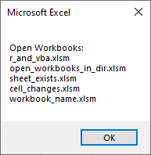
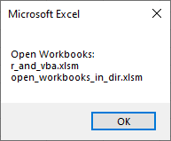

Introduction
Hello, fellow R useRs! Today, we’re going to discuss a fascinating topic that bridges the gap between VBA (Visual Basic for Applications) and R. We’ll explore how to get a list of all open workbooks in Excel using VBA and then call this VBA code from R. This can be particularly useful if you’re working with multiple Excel files and need to manage them efficiently from R.
Prerequisites
Step 1: Writing the VBA Code
First, let’s write a simple VBA macro to list all open workbooks. Open Excel, press Alt + F11 to open the VBA editor, and insert a new module. Here’s the VBA code:
Sub ListAllOpenWorkbooks()
Dim wb As Workbook
Dim wbNames As String
wbNames = "Open Workbooks:" & vbCrLf
For Each wb In Application.Workbooks
wbNames = wbNames & wb.Name & vbCrLf
Next wb
MsgBox wbNames
End SubExplanation:
- Sub ListAllOpenWorkbooks(): This starts our macro.
- Dim wb As Workbook: Declares a variable wb to represent each workbook.
- Dim wbNames As String: Declares a string variable to store the names of open workbooks.
- For Each wb In Application.Workbooks: Loops through each open workbook.
- wbNames = wbNames & wb.Name & vbCrLf: Appends the name of each workbook to the wbNames string.
- MsgBox wbNames: Displays the names of all open workbooks in a message box.
Step 2: Saving the VBA Macro
Save your VBA macro by clicking File > Save. Make sure to save your Excel file as a macro-enabled workbook (.xlsm).
Step 3: Calling the VBA Macro from R
Now, let’s move to R. We’ll use the RDCOMClient package to interact with Excel and call our VBA macro. If you haven’t installed this package yet, you can do so using:
install.packages("RDCOMClient", repos = "http://www.omegahat.net/R")Here’s the R code to call our VBA macro:
library(RDCOMClient)
# Create a COM object to interact with Excel
excel_app <- COMCreate("Excel.Application")
# Make Excel visible (optional)
excel_app[["Visible"]] <- TRUE
# Open the workbook containing the VBA macro
workbook <- excel_app[["Workbooks"]]$Open("C:\\path\\to\\your\\workbook.xlsm")
# Run the VBA macro
excel_app$Run("ListAllOpenWorkbooks")
# Close the workbook without saving
workbook$Close(FALSE)
# Quit Excel
excel_app$Quit()Explanation:
- library(RDCOMClient): Loads the RDCOMClient package.
- COMCreate(“Excel.Application”): Creates a COM object to interact with Excel.
- excel_app[[“Visible”]] <- TRUE: Makes Excel visible (optional).
- excel_app[[“Workbooks”]]$Open(“C:.xlsm”): Opens the workbook containing the VBA macro. Replace “C:\path\to\your\workbook.xlsm” with the actual path to your workbook.
- excel_app$Run(“ListAllOpenWorkbooks”): Runs the VBA macro.
- workbook$Close(FALSE): Closes the workbook without saving changes.
- excel_app$Quit(): Quits Excel.
Here are some sample outputs for me:


Conclusion
And there you have it! You’ve successfully listed all open workbooks using VBA and called this macro from R. This approach can be incredibly powerful for automating tasks that involve both R and Excel. Give it a try and see how what happens!
Feel free to experiment with the code and adapt it to your needs.
Happy coding! 🚀